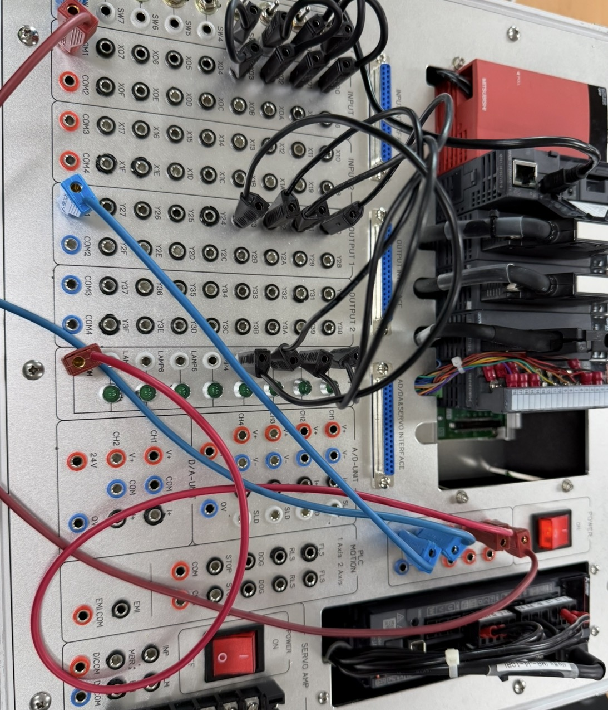
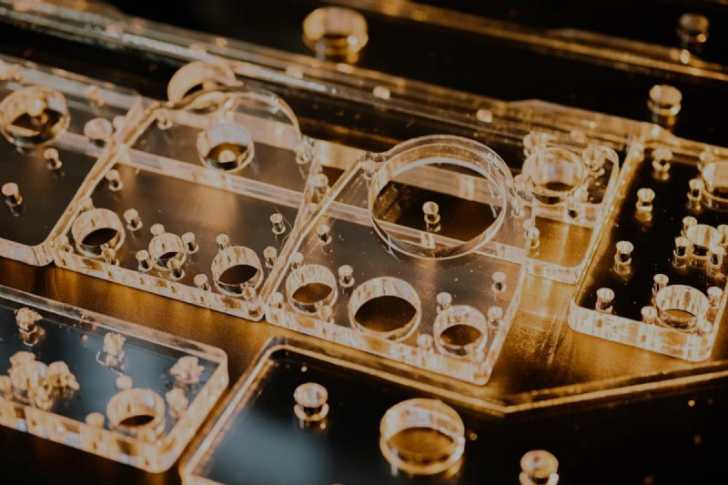

반도체 웨이퍼 이송 로봇 최적화
Technical Benchmark
예선 데이터 기반의 문제 진단 및 본선 알고리즘 고도화 결과입니다.
| 분석 항목 | 예선 단계 (우진조 기준) | 최적화 단계 (가을맞이팀 본선) |
|---|---|---|
| 주행 효율 | 완주 39초 기록 | 불필요한 대기 제거, 딜레이 최적화 |
| 인식 로직 | 양쪽 웨이퍼 동시 인식 | 왼쪽 웨이퍼 집중 인식 (시간 단축) |
| 모션 제어 | 시작/정지 시 '툭툭' 끊김 현상 | PID 제어 기반 부드러운 가감속 |
| 정밀도 | 도착 지점 관성 오차 발생 | 정확한 지점 정지 로직 구현 |


설계 변천사
마분지 프로토타이핑 → 5mm 고강도 아크릴 정밀 가공

⚙️
PID 알고리즘 고도화
주행 시작과 끝에서 발생하는 물리적 충격(stuttering)을 해결하기 위해 PID 파라미터를 튜닝하여 안정적인 이송 시스템을 구축했습니다.
⚡
전력 및 구동 최적화
웨이퍼 파지 시 전력 분산으로 인한 모터 출력 저하를 방지하기 위해 기어비를 하향 조정하고 모터 토크를 재설계했습니다.
🔍
센서 노이즈 필터링
초음파 센서의 인식 오류를 해결하기 위해 하드웨어 배선을 전면 수정하고, 소프트웨어적으로 디바운싱 로직을 강화했습니다.